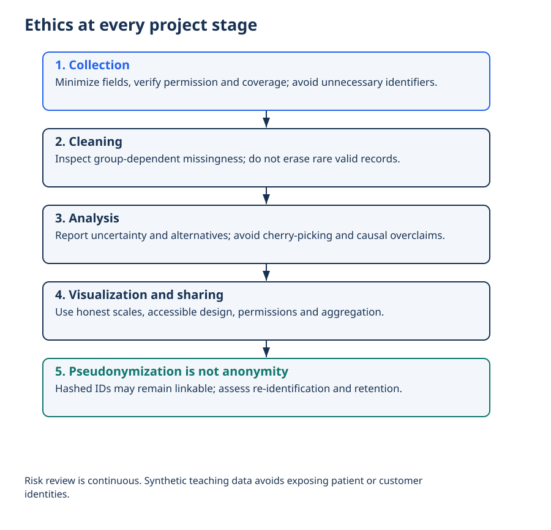
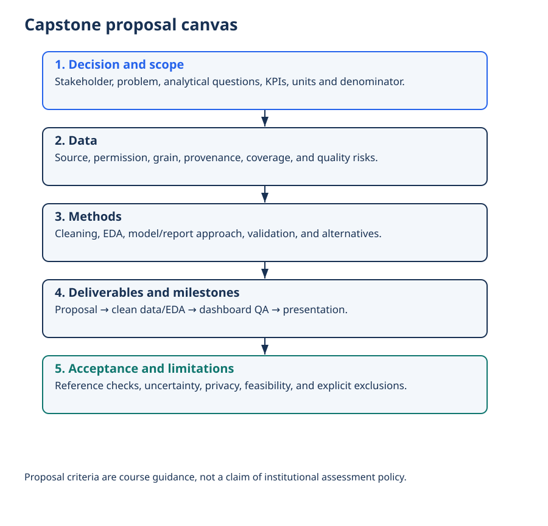

Lecture 27: Ethics & Project Proposal
Bias, privacy, fairness, responsible reporting, and professional conduct. Every analyst will face ethical choices — this lecture gives you a practical framework before you start the Capstone.
1. Learning Objectives
- 1 Identify common sources of bias in data collection, cleaning, analysis, and visualization.
- 2 Apply privacy principles (minimisation, purpose limitation, anonymisation) to analytics work.
- 3 Distinguish correlation from causation and avoid overclaiming in reports and dashboards.
- 4 Recognise fairness issues when metrics or models affect people differently across groups.
- 5 Document ethical decisions and communicate limitations honestly to stakeholders.
2. Why Ethics Matters for Analysts
Analytics is not neutral. The questions you choose, the data you keep or drop, the charts you design, and the language you use all shape decisions that affect real people — customers, patients, employees, citizens.
3. Bias in the Analytics Pipeline
| Stage | Common bias risks | Mitigation |
|---|---|---|
| Collection | Under-representation of groups; selection bias; historical bias in legacy systems | Audit sample composition; document known gaps |
| Cleaning | Dropping “messy” groups; imputing in ways that favour majority patterns | Compare missingness across groups; keep “Unknown” categories when informative |
| Analysis | Cherry-picking metrics; ignoring confounding; p-hacking | Pre-register questions; report effect sizes + uncertainty |
| Visualization | Misleading scales, truncated axes, colour that hides groups | Start axes at zero when appropriate; show uncertainty; test with diverse reviewers |
| Deployment | Metrics that optimise for one group at the expense of another | Slice KPIs by sensitive attributes (where legal/ethical); monitor drift |
4. Privacy & Data Minimisation
- Collect only what you need for the stated purpose (data minimisation).
- Purpose limitation — do not reuse data for a new purpose without a legal/ethical basis and transparency.
- Anonymisation / pseudonymisation — remove or hash direct identifiers; be aware that re-identification is often possible with enough quasi-identifiers.
- Access control — least privilege; audit who can see sensitive fields.
- Retention — define how long data is kept and when it is deleted.
5. Responsible Reporting — Correlation ≠ Causation
Analysts are often pressured to deliver “insights” that sound causal. Resist overclaiming.
- Use language carefully: “associated with”, “higher among”, “predicts” (for predictive models) vs “causes”.
- Report uncertainty (confidence intervals, sensitivity analyses) when possible.
- Disclose limitations of the data and of the analysis.
- Show the full distribution or multiple cuts, not only the highlight that supports a preferred narrative.
6. Fairness & Differential Impact
A metric or model can be accurate overall yet systematically worse for a particular group (e.g., by gender, age, region, or socio-economic status).
- Where legally and ethically appropriate, examine key metrics by group.
- Ask whether the feature set or the historical labels encode past discrimination.
- Document trade-offs when fairness constraints conflict with other objectives.
7. Short Case Studies
Healthcare triage score
A risk score trained on historical cost data under-predicted need for certain demographic groups because those groups had historically received less care. Lesson: labels can encode past inequity.
Hiring “culture fit” analytics
Filtering candidates on proxies that correlate with protected characteristics can produce disparate impact even if the protected attribute itself is never used.
Dashboard that “proved” zero incidents
Silent join failure dropped an entire region. Celebrating the number without checking completeness caused real harm. Lesson: quality and ethics are linked.
Public COVID maps
Publishing fine-grained location data of positive cases risked re-identification of individuals. Lesson: privacy risk rises with geographic and temporal granularity.
8. Ethics Checklist for Every Project
- What is the purpose of this analysis and who is affected?
- Is the data necessary, proportionate, and lawfully obtained?
- Have we checked for under-representation and differential missingness?
- Are we about to claim causation without evidence?
- Have we examined key metrics by relevant groups (where appropriate)?
- Is sensitive data protected by access controls and minimisation?
- Have we documented limitations and residual risks for stakeholders?
- Would we be comfortable if this work were reported in the press?
9. Ethics in Your Capstone
In L28–L30 you will choose a domain, clean data, build a model, and present. Apply this lecture explicitly:
- Include a short “Ethics & Limitations” slide or section in your proposal and final presentation.
- Note any known bias risks in the source data and how you handled missingness.
- Avoid causal language unless your design supports it.
- Protect any personal or sensitive fields (mask, aggregate, or exclude).
10. Interview & Viva Questions
- Give an example of selection bias and how an analyst can detect it.
- What is the difference between anonymisation and pseudonymisation?
- How would you respond if a stakeholder asked you to “make the numbers look better”?
- Why can a model that never uses a protected attribute still be unfair?
- What belongs on an “Ethics & Limitations” slide?
11. Knowledge Check
Q1. A risk model trained on historical healthcare costs under-estimates need for a group that historically received less care. This is mainly an example of:
Q2. Preferred language when you only have an observational association:
12. Cheat Sheet
- Bias can enter at collection, cleaning, analysis, visualisation, deployment
- Privacy → minimisation, purpose limitation, access control, careful aggregation
- Reporting → correlation ≠ causation; disclose limitations
- Fairness → examine metrics by group when appropriate
- Capstone → include an Ethics & Limitations section
13. Summary
- Ethics is a practical skill: check bias sources, protect privacy, report honestly, watch for differential impact.
- Document limitations — it protects stakeholders and protects you in the viva.
- Apply the checklist to every Capstone decision from proposal to final presentation.
14. What’s Next
Lecture 28 — Project Lab is where you apply cleaning, EDA, visualisation and ethics to your chosen Capstone domain.
Worked practice: Submit an ethical proposal
Use the course-guide rubric to specify the problem, question, metric, data inventory, permission, privacy, method, validation and deliverables.
Interpretation check: Remove identifiers where possible, minimize collection, protect access and examine subgroup validity. State uncertainty and avoid implying observational association is causal.
Setup, all labs, datasets, DAX measures and capstone guidance · Interactive retail teaching report
Ethics at every project stage


Interpret: Does hashing guarantee anonymous data?
No; linkage and re-identification can remain possible.
Read diagram labels (mobile text)
- Ethics at every project stage
- 1. Collection
- Minimize fields, verify permission and coverage; avoid unnecessary identifiers.
- 2. Cleaning
- Inspect group-dependent missingness; do not erase rare valid records.
- 3. Analysis
- Report uncertainty and alternatives; avoid cherry-picking and causal overclaims.
- 4. Visualization and sharing
- Use honest scales, accessible design, permissions and aggregation.
- 5. Pseudonymization is not anonymity
- Hashed IDs may remain linkable; assess re-identification and retention.
- Risk review is continuous. Synthetic teaching data avoids exposing patient or customer
- identities.
Capstone proposal canvas


Interpret: What makes a proposal feasible?
A bounded question, accessible data, realistic methods and explicit acceptance criteria.
Read diagram labels (mobile text)
- Capstone proposal canvas
- 1. Decision and scope
- Stakeholder, problem, analytical questions, KPIs, units and denominator.
- 2. Data
- Source, permission, grain, provenance, coverage, and quality risks.
- 3. Methods
- Cleaning, EDA, model/report approach, validation, and alternatives.
- 4. Deliverables and milestones
- Proposal → clean data/EDA → dashboard QA → presentation.
- 5. Acceptance and limitations
- Reference checks, uncertainty, privacy, feasibility, and explicit exclusions.
- Proposal criteria are course guidance, not a claim of institutional assessment policy.
Your reading progress
Completion is self-reported reading progress, not a mastery score. Use the lab and interpretation checks to assess understanding.